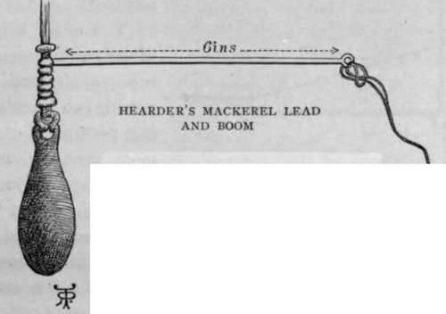

Sea Fishing From Yachts And Large Fishing Boats. Part 3
Description
This section is from the book "Sea Fishing", by John Bickerdyke. Also available from Amazon: Sea Fishing.
Sea Fishing From Yachts And Large Fishing Boats. Part 3
There are several forms of railing or whiffing tackles used on various parts of the coast. They vary mainly in the shape of the lead, and the chopstick used in connection with it. The most important point is to have a lead of such a shape that it will tow steadily and not sheer about. If it is of such a form that it will keep its position on the deck and not roll to leeward when hauled in, so much the better. The more or less circular leads are believed not to sheer about so much as a boat-shaped one, but these latter, so far as my experience goes, have little tendency to sheer if cast in an even-sided mould and fitted truly to the line.
Three mackerel gears are illustrated. The first drawing was made from gear provided by one of the cleverest fishermen at Tenby, a place where mackerel lining is well understood, four or five hundred fish sometimes being taken by a single boat before midday. The illustration on this page is of the gear commonly used by the Plymouth fishermen, who, it will be noticed, now use a corpulent cigar-shaped lead, cast on brass or galvanised iron wire, having given up their old gear, which was somewhat similar in principle to the Tenby tackle. Thirdly is a drawing of a neat amateur gear designed by Mr. Hearder, of Plymouth. Here a wire boom works round a piece of brass piping passed over the line.
MACKEREL WHIFFING.
I do not know a better outline for a mackerel whiffing lead of the old type than that followed by Brooks, of Stonehouse, in the patent arrangement made in sections and illustrated on page 280. By pushing up the indiarubber block (which is pierced by the wire) and the top section, the central sections may be removed or replaced, so that the weight of lead can be diminished or increased. I have used this piece of gear for mackerel fishing and find it answers exceedingly well. The idea originated with the Rev. F. W. Tracy and was perfected by Messrs. Brooks. It is a good lead, too, for fishing on or near the bottom, a long snood with three or four hooks being attached to the swivel. It will be noticed that when a fish is hooked it pulls not immediately on the lead, but on the line a foot above it. A bite is thus more easily felt by the fisherman than with other gears, particularly if the lead is resting on the bottom. I regard it as a very valuable invention. The wire boom prevents it rolling about when hauled inboard and laid on a thwart. Some of the best lines for snoods I have seen are those manufactured by the Manchester Cotton Twine Spinning Co. About thirty yards or fifteen fathoms of mackerel main line is required ; and below the lead there should be about four yards of fine snooding, then a brass swivel and two yards of gut terminated by a single hook. Many amateurs' snoods are now made of gimp tailing off into gut. This arrangement kinks and entangles far less than hemp or any piece of soft line.
The usual weights of lead are three pounds, two pounds, and one pound, two pounds being perhaps the one most generally useful for fishing from yachts. When there is a very slight breeze, and the yacht is hardly moving, leads of a few ounces only are quite sufficient and will catch many more fish than those of greater weight. Large yachts often tow leads weighing as much as four pounds, but if the vessel is sailed at the right speed so much lead is not required.
The length of line let out is not as a rule very great, ten yards being often deemed enough with the three-pound lead. When the fish are feeding well, it is obviously a disadvantage to have more line out than is necessary, because time is lost in hauling in. But on bright days, when the fish are shy, and particularly if the yacht is a large one, it is desirable to have a light lead, let out a long length of line, and use a rather small hook.
Patent Variable Lead Sensitive Gear.
A common practice of professional fishermen is to have out two pairs of lines, or even more, bearing different weights, and therefore fishing at different depths. Lines are frequently boomed out, and in small yachts it is a simple matter to rig them out at the end of the sweeps. Two lines can thus be worked on each side of the yacht. Four lines will keep two persons busily employed if the mackerel are plentiful. In the Bristol Channel, lines which are boomed out in this way are brought into the boat by means of a leader, an extra piece of line made fast to the mackerel line a fathom and a half below the end of the boom and brought inboard. By this means the outside lines can be brought within reach of the hand without interfering with the booms, which should be firmly fixed in position. On the Cornish coast, where, as off Devon, this mackerel railing is often termed ' plummeting,' fishermen frequently use a long stick with a hook on the end to get hold of the boomed-out lines. Just such a leader as above described is shown in the illustration of the ocean fishing rod in Chapter IX.
At Plymouth the usual custom among the professional fishermen who are expert mackerel catchers is to have six lines. From each side of the stem are heavily leaded lines, from amidships two lines less heavily leaded, and from each side the stern two with still lighter leads. These stern lines are boomed out and have a tripping line attached to haul them within reach. The boat is sailed two or three miles an hour, and a couple of men can soon haul in a few hundred mackerel. The cigar-shaped gear must be free from the vice of sheering to be used in this way. The spinner (p. 278) is sometimes used without other bait.
Continue to:
- prev: Sea Fishing From Yachts And Large Fishing Boats. Part 2
- Table of Contents
- next: Sea Fishing From Yachts And Large Fishing Boats. Part 4
Tags
fishing, hooks, bait, fishermen, spanish mackerel, mackerel fishing